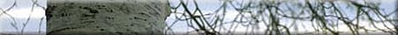

The Growing Parts of Trees and Factors That Affect
Growth
Before you get started, give some thought to the following questions.
- Have you ever noticed how much trees grow from year to year
in your neighbourhood? Think of changes you have noticed as a
result of tree growth in your communities.
- How can you tell if a tree is growing?
- Where does growth occur in a tree?
#1 - Create your own experiment that demonstrates either the actual growing parts of a tree or that demonstrates some of the factors that affect the growth of a tree (e.g., water, amount of light, location, environment). How can you test your ideas and ensure that your tests are fair? Think through each step of the experiment and predict what might happen. What are your conclusions?
#2 - Try the experiment given or use it as a model for your experiment.
Option #2: Measuring Twig Growth and Effects of Sucrose on Buds
Purpose:
To observe and measure twig growth and to observe the effects of a sucrose solution on the buds
Three or four freshly cut dormant twigs of local shrubs or trees
(about 30 cm long), two large glass jars, 50 mL sugar, 1L beaker,
glass stirring rod, two large clear plastic bags, water
1. Pick one twig from each species available. Sketch the twigs and label the different parts (terminal bud, lateral bud, and terminal bud scar).
2. Measure and record the length of the twigs, the length and diameter of the buds, and the colour of the bud scales. Measure the length from the terminal bud to the terminal bud scar.
3. Make up a dilute solution of sucrose by mixing sugar in water in a beaker and stirring until the sugar is dissolved. Place twigs in a jar of water and add a few millilitres of the sucrose solution. As a control, place several twigs in a jar of water with no sucrose solution.
4. Place the jars of twigs in a warm, sunny location. Cover the twigs in both jars with the clear plastic bags.
5. Observe and measure the twigs every few days, and record your data in a suitable data table. Add more sucrose solution every other day. Attempt to identify the species after leaves and flowers form -- usually after about two weeks.
Try to generate your own questions about the experiment and draw conclusions about what conditions are required to break the dormancy of buds.
Try answering these questions:
- What might the sucrose solution represent in the growth of
a tree?
- What affect does covering the twigs with plastic bags have
on the twigs?
- Did the buds produce anything other than leaves? If so, could
you have predicted what the bud would produce from its appearance?
- What would happen to the twig if the terminal bud was snipped
off? (You may try this as an experiment.)
- Did different species grow at different rates? If so, which
were fastest and which slowest?
- How did the final length grown by your twig compare with the length it grew the previous year?
1. Select an individual tree in the schoolyard, a nearby forest,
a woodlot, or a yard. Write a life history of that tree, detailing
the factors that have affected its growth.
2. Examine several trees near the school or your home and compare their current year's growth in height by measuring the distance between the terminal bud scars and the tips of several growing twigs. What might account for any differences between trees?